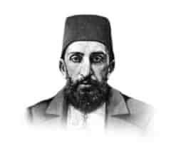

II. ABDÜLHAMİT
Annesi : Tiri Müjgan Kadın Efendi
Doğumu : 21 Eylül 1842
Vefatı : 10 Şubat 1918
Saltanatı : 1876 - 1909 (33 yıl)
II. Abdülhamit, İstanbul’da doğmuştur. Uzun boylu, buğday benizli, siyah ve sık sakallıydı. Kaşlarının üzeri hafifçe çıkıntılı ve gözleri de siyahtı. Devrinin en kıymetli âlimlerinden, çok iyi bir tahsil yaptı. Kuvvetli bir hafıza ve basirete sahipti. Gayet güzel ve düzgün konuşurdu. Deha derecesinde bir siyasete sahipti. Aynı zamanda çok cesur bir padişahtı. Spor yapmaktan hoşlanırdı. Gayet güzel silah ve kılıç kullanırdı.
Tasavvufa ait geniş bilgisi vardı. Padişahlığı zamanında yıkılmak üzere olan devleti ayakta tutacak en iyi tedbir ne ise onları hiç tereddüt etmeden yerine getirdi ve devletin yıkılmasını tam otuz üç yıl geciktirdi. Devrinde yapmış olduğu işleri, bazı aydın geçinen tabaka hariç, herkes takdirle karşılıyordu. Aleyhine her türlü iftiralar en kötü isnatlar uyduruluyor ve Avrupa devletlerinin himayesinde yaşayan çeyrek aydın bile olamayanlar gazetelerinde, durmadan bu iftira ve isnatları yazıyorlardı. Hiç yılmadan ve bıkmadan Devlet-i Aliyye’yi otuz üç yıl idare etti.
Bir dünya savaşının çıkacağına inanıyor, çıktığında ise Osmanlı Devleti’ni kurtaracak şeyin, ancak denizlerde kuvvetli bir devletin yanında savaşa katılmak olduğunu düşünüyordu. Tahttan indirildiğinden hemen sonra bu görüşünün tam zıddı yapılmış koca devlet de tamamen yıkılmıştı. Prens Bismark’a göre 100 gram aklın 90 gramı Abdülhamit Han’da, 5 gramı kendisinde, 5 gramı da diğer siyasilerdedir. En büyük talihsizliği devleti en kötü şartlar altında eline almış olmasıdır. Tahttan indirildikten sonra zaman ilerledikçe, aleyhinde olup da pişman olmayan hemen hemen kalmamış gibiydi. Son derece dindar ve namuslu idi. Zevk ve sefaya düşkün değildi. Abdestsiz olarak hiçbir devlet işine imza atmadığı meşhurdur. 1908 yılında düzmece bir irtica olayı bahane ederek tahttan indirdiklerinde yüksek bir veli derecesinde olan Büyük Hakan: “Bu Cenab-ı Hakk’ın takdiridir.” diyerek elinde muazzam kuvvetler olduğu halde müdahale bile etmeden tahtını terk etmiştir.
Tahttan indirilmesinde birinci derecede Yahudilerin rolü vardı. Çünkü daha o zamanlar Yahudiler Filistin’den toprak istemişler, Sultan Abdülhamit de reddetmişti. Siyasi ve diplomatik hadiselerin en çok olduğu devir şüphesiz Ab-dülhamit Han devridir. Bu büyük padişaha, bütün tarihi hakikatler ortaya çıkmış olmasına rağmen, hâlâ iftira edenlere rastlamak mümkündür. Tahta çıktığında, amcası Sultan Abdülaziz’in intihar edip etmediğini tespit etmek için bir mahkeme kurdurmuş ve kurulan bu mahkemede; Hüseyin Avni, Mithat Paşa ve daha bazılarının öldürttüklerini tespit ettirmiş. Bunun üzerine Mithat Paşa’nın idam edilmesini, Gazi Osman Paşa ve Ahmet Cevdet Paşa gibi büyük dâhiler bile istemiş olmalarına rağmen idam cezasını müebbet hapse çevirmiştir.
Abdülhamit neler yapmıştır:
Tahttan indirildikten sonra Selanik’e sürülmüş, birçok işkenceler yapılmış ve Selanik’in düşman işgali altında kalma ihtimali çıkınca İstanbul’a Beylerbeyi Sarayı’nda oturmaya mecbur edilmiştir.
Büyük Hakan 1918 yılının 10 Şubat’ında bu sarayda hayata gözlerini yummuş, Divanyolu’ndaki Sultan Mahmut Türbesi’ne, amcası Sultan Abdülaziz ile dedesi II. Mahmut’un yanına defnedilmiştir. Vefatında yetmiş beş yaşını dört ay geçiyordu. Cenazesinde en hareketli aleyhtarları bile ağlamışlardır.
Erkek çocukları: Mehmet, Selim, Abdülkadir, Ahmet Nuri, Mehmet Burhaneddin, Abdürrahim, Ahmet Nureddin, Mehmet Âbid, Ahmet.
Kız çocukları: Ulviye, Zekiye, Naime, Naile, Ayşe, Refia, Sadiye.